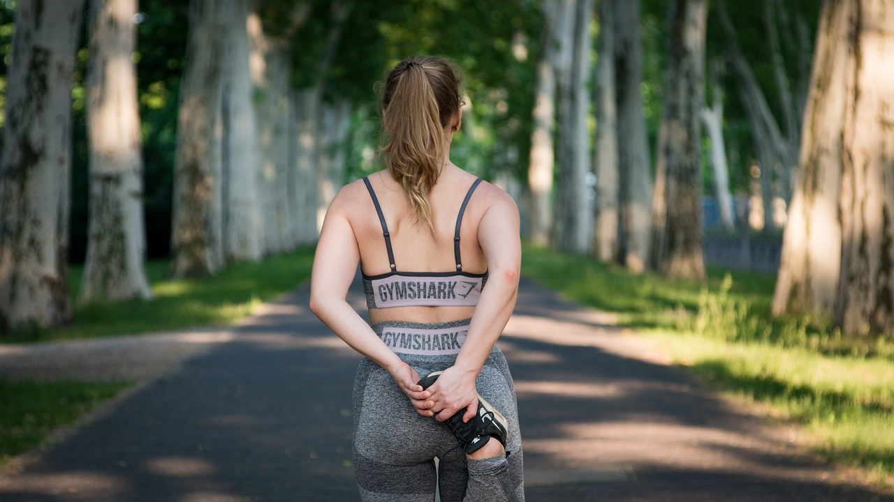

So, wir gehen mal davon aus, dass du bereits laufen kannst ;)
Was brauchst du?
Zuerst einmal brauchst dich selber und deine Beine. Ein paar Schuhe und Laufkleidung wäre natürlich auch nützlich. Diese findest du hier.
Mein persönlicher Tipp als Triathlet und Läufer ist eine Trackingapp. Diese gibt es kostenlos im AppStore und GooglePlayStore.
Eine Auswahl an kostenlosen Trackingapps findest du hier.
Warum Laufen?
Beim Laufen verbrennt man nicht nur Kalorien sondern man verbessert zusätzlich noch seine Ausdauer.
Es ist gesund und oft kann man dabei einfach abschalten und den Kopf frei bekommen. Außerdem macht es einfach nur Spaß. :)
